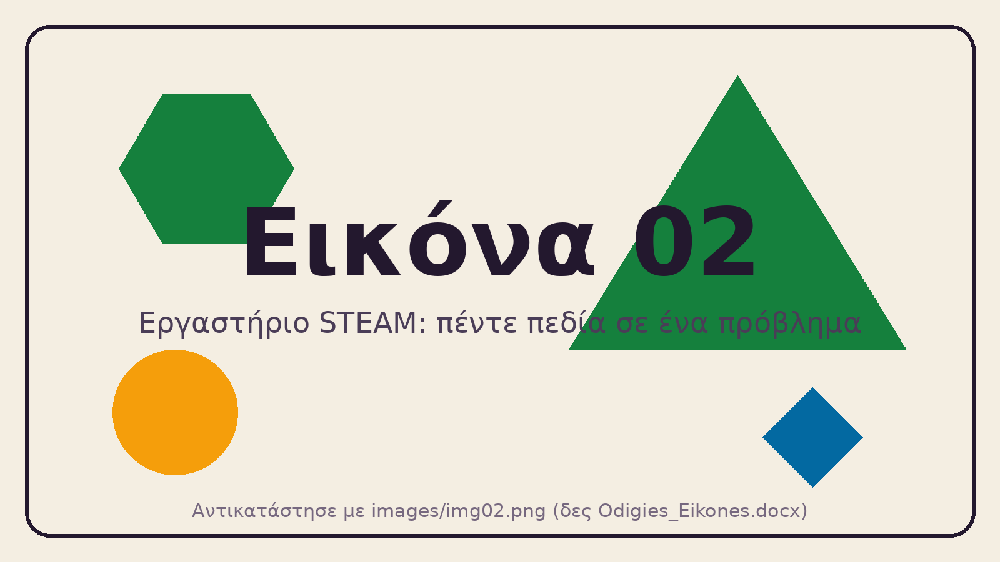

Ένας όρος που όλοι χρησιμοποιούν και λίγοι ορίζουν. Για μια διπλωματική, το πρώτο βήμα είναι να πεις με ακρίβεια τι εννοείς.
Το STEM (Science, Technology, Engineering, Mathematics) ήταν αρχικά μια πολιτική ανάγκη: περισσότεροι νέοι στις επιστήμες και στη μηχανική. Το «A» προστέθηκε για να φέρει τις τέχνες στο ίδιο τραπέζι. Ο όρος STEAM συνδέεται κυρίως με το έργο της Georgette Yakman (2008), που πρότεινε ένα μοντέλο ενοποιημένης εκπαίδευσης με βάση τα μαθηματικά.
Το βασικό πρόβλημα για όποιον ερευνά το πεδίο: ενιαίος ορισμός δεν υπάρχει. Η ανασκόπηση των Perignat και Katz-Buonincontro (2019) έδειξε ότι ο όρος χρησιμοποιείται με πολύ διαφορετικούς τρόπους στην πράξη και στην έρευνα. Γι' αυτό μια διπλωματική πρέπει να δηλώνει ρητά ποιον ορισμό ακολουθεί.

Σε αυτόν τον οδηγό, κάθε γράμμα έχει στενό, ελέγξιμο ορισμό. Έτσι μπορείς να κρίνεις αν ένα σενάριο είναι πράγματι STEAM.
| Σημαίνει | Δεν σημαίνει | |
|---|---|---|
| S | Φυσικές επιστήμες: φυσική, χημεία, βιολογία, επιστήμες της Γης. Διερεύνηση, παρατήρηση, πείραμα. | Όλες τις επιστήμες. Οι κοινωνικές και ανθρωπιστικές επιστήμες δεν είναι S. |
| T | Τεχνολογία που χρησιμοποιείται ή κατασκευάζεται για να λυθεί το πρόβλημα: αισθητήρες, ρομποτική, προσομοιώσεις, υποστηρικτική τεχνολογία. | Ο υπολογιστής ή το tablet ως μέσο παρουσίασης. |
| E | Μηχανική: ο κύκλος σχεδιασμού. Ορισμός προβλήματος, πρωτότυπο, δοκιμή, βελτίωση. | Μια «κατασκευή» χωρίς δοκιμή και βελτίωση. |
| A | Τέχνες: εικαστικά, μουσική, θέατρο, χορός, σχεδιασμός. Η αισθητική κρίση και η έκφραση είναι στόχοι μάθησης. | Γλώσσα, ανθρωπιστικές ή κοινωνικές επιστήμες. Ούτε μια ζωγραφιά «για στολίδι» στο τέλος. |
| M | Μαθηματικά: μέτρηση, μοτίβα, δεδομένα, μοντελοποίηση, που χρειάζονται για να προχωρήσει το έργο. | Αριθμοί που εμφανίζονται χωρίς να χρησιμοποιούνται. |
Ορισμένοι συγγραφείς, ανάμεσά τους και η ίδια η Yakman, διαβάζουν το A ευρύτερα, ώστε να περιλαμβάνει γλώσσα, ανθρωπιστικές και κοινωνικές επιστήμες. Εδώ δεν την υιοθετούμε. Η γλώσσα και οι κοινωνικές επιστήμες μπορούν να μπαίνουν σε ένα σενάριο STEAM ως θεματικό περιεχόμενο (π.χ. ένα πρόβλημα της γειτονιάς), όχι ως γράμμα του ακρωνυμίου.
Ο σχεδιασμός ενός μουσικού οργάνου καθορίζει και το πώς ακούγεται: αισθητική και φυσική του ήχου πάνε μαζί.
Υπάρχουν κριτήρια για την καλλιτεχνική επιλογή, όχι μόνο για το «επιστημονικό» μέρος.
Ένα μοντέλο, ένα σχέδιο, μια κίνηση δείχνουν κατανόηση που δεν φαίνεται σε ένα γραπτό.
«Ζωγράφισε το πείραμα που έκανες.» Η τέχνη δεν επηρεάζει τίποτα.
Η παρουσίαση γίνεται «ωραία», αλλά δεν υπάρχει καλλιτεχνικός στόχος.
Ένα κείμενο για το πείραμα δεν είναι STEAM με τον δικό μας ορισμό.
Βλ. Liao (2016) για τη μετάβαση από τη διεπιστημονική στην υπερεπιστημονική ένταξη των τεχνών στο STEAM.
Η ουσία δεν είναι πόσα μαθήματα «εμπλέκονται», αλλά αν η γνώση από το ένα πεδίο χρειάζεται για να προχωρήσει το άλλο. Τα τρία επίπεδα ολοκλήρωσης (Drake & Burns, 2004):
Κάθε πεδίο κρατά τα όριά του και φωτίζει ένα κοινό θέμα από τη δική του πλευρά.
«Το νερό» στη φυσική, στα μαθηματικά και στα εικαστικά, σε χωριστές ώρες.
Τα πεδία συνδέονται μέσα από κοινές έννοιες και δεξιότητες.
Μετρήσεις, γραφήματα και οπτική αναπαράσταση της ροής του νερού σε ένα ενιαίο έργο.
Το πρόβλημα οργανώνει τη μάθηση και τα όρια των πεδίων υποχωρούν.
Σχεδιασμός συστήματος συλλογής βρόχινου νερού για την αυλή του σχολείου.
Ένα σενάριο STEAM είναι κατά κανόνα οριζόντια σύνδεση. Αν η διπλωματική σου μελετά μια σειρά σεναρίων σε βάθος χρόνου, έχει νόημα να εξετάσεις και την κάθετη.
Το STEAM συνδέεται συχνά με τις «δεξιότητες του 21ου αιώνα». Τα πλαίσια που θα συναντήσεις πιο συχνά:
Πολλές εργασίες γράφουν «καλλιεργεί δεξιότητες του 21ου αιώνα» χωρίς να ορίζουν ποια δεξιότητα, με ποιο πλαίσιο και πώς φάνηκε. Η δημιουργικότητα και η κριτική σκέψη είναι από τις δυσκολότερες να τεκμηριωθούν. Κανόνας: μία ή δύο δεξιότητες, με ρητό ορισμό και ρητό τρόπο τεκμηρίωσης (ρουμπρίκα, παρατήρηση, εργαλείο).